This chapter aims to clear up loose ends, with discussions of ellipsis (section 12.2), parentheticals (section 12.4), and annotation for (embedded) multi-sentences (section 12.6)
We have seen ellipsis already with missing phrase heads in chapter 3. It is also possible for entire (internal layer) clause and phrase elements to be elided under parallelism. For example,
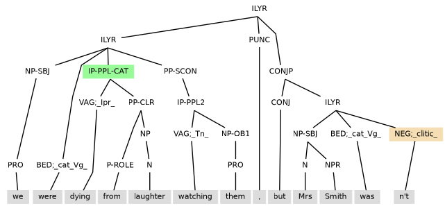
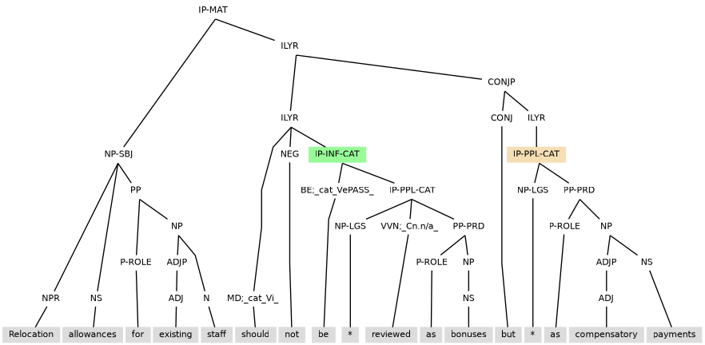
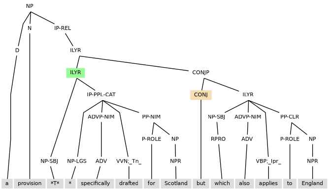
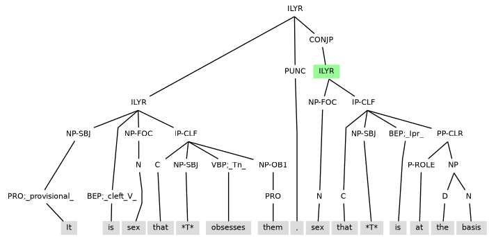
Ellipsis can take place when coordination and subordination are combined.
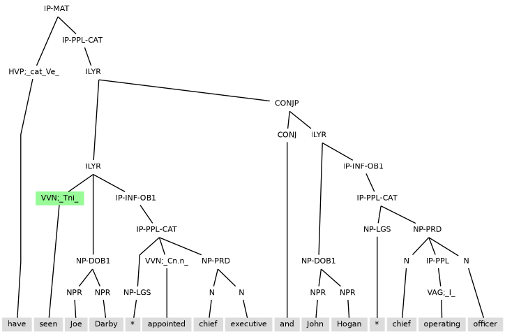
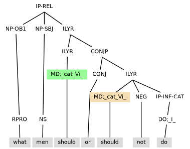
Ellipsis can be found when there is a grammatical code that lacks support from its environment. For example, in (12.7) want is coded Tnt and yet there is no direct object non-finite clause and indirect object noun phrase in its clause of occurrence.
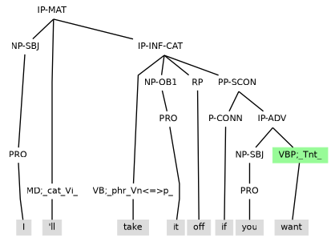
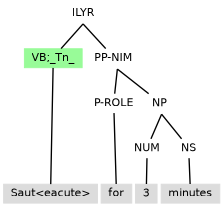
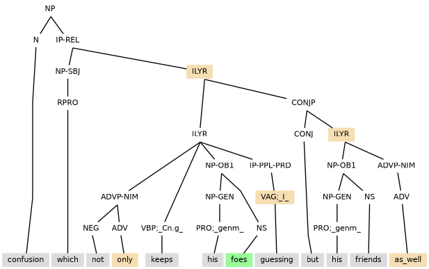
Example illustrates the need for marking the presence of a missing object which goes on to be a controller.
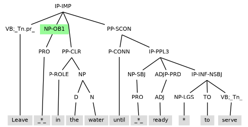
| PRN | parenthetical |
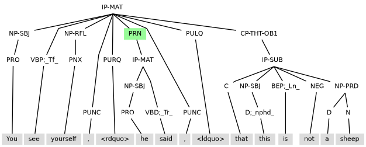
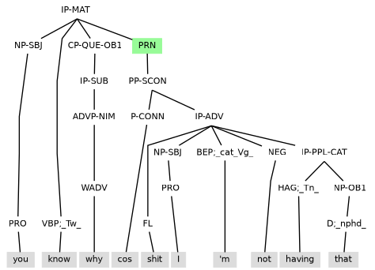
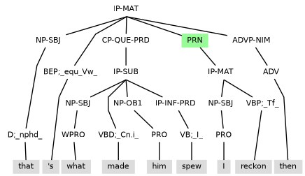
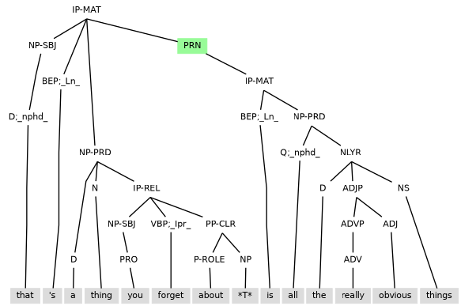
ILYR under PRN
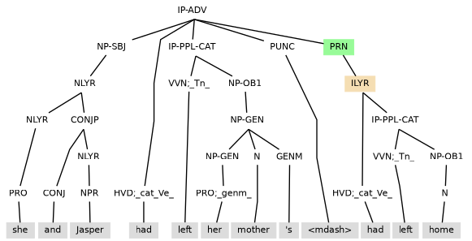
| CP-QUE-TAG | tag question |
The annotation uses CP-QUE-TAG in the description of tag questions, as, for example, in (12.16).
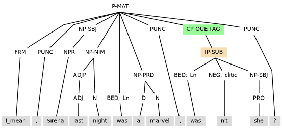
| multi-sentence | embedded discourse |
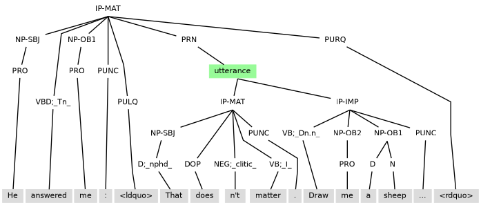